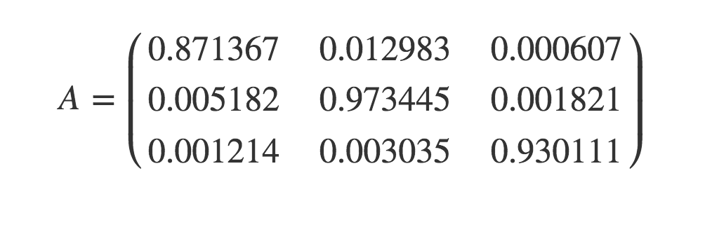
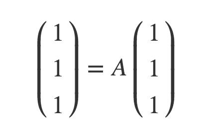
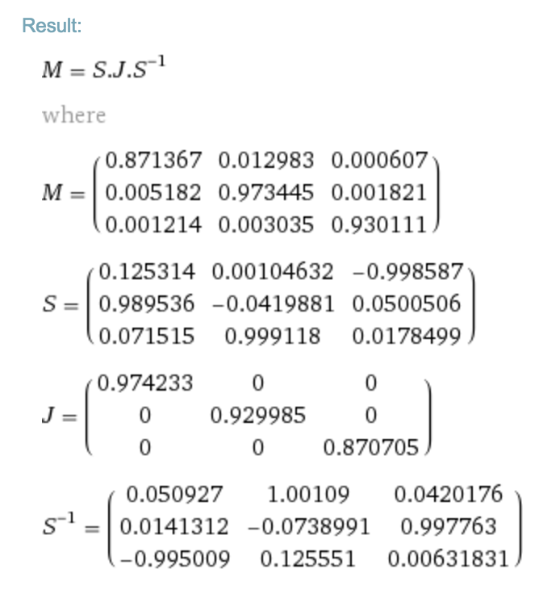

ごにょごにょすることで、以下の基本色を得た。
視覚の仕組み自体に大きな差はないので、RGBを用いて表現しようとすること自体は自然である。ただし、そのとき基本色として使われる色が完全に一致しているというのは不自然なので、ごにょごにょをした。
| 現世: | #ff0000 |
#00ff00 |
#ffff00 |
#0000ff |
#ff00ff |
#00ffff |
| 悠里OS: | #f01004 |
#1efc0a |
#f9f813 |
#0206f7 |
#fc0ae8 ??? |
#23fcfc |
このうち、マゼンタ相当については現世のと明らかに色調が異なる。マゼンタという色自体が自然界であまり出てこないことも合わせて考え、マゼンタについては暫定値とする。
赤もそれなりに差があるが、好意的な意見を得られたのでこのままとする。
1.で得たhex codeは、ガンマ補正という操作が行われた状態での値であるため、これにsRGBの逆変換を用いて本来の物理学的明るさ情報を復元する。
とりあえず、腕慣らしに黄色とシアンを単純な和でやってみよう。赤と緑の和は[241.57, 252.59, 13.62]である。緑と青の和は [30.85, 252.21, 247.35]、赤と青の和は[240.07, 20.01, 247.14]
#f2fd0e |
#f014f7 |
#1ffcf7 |
黄色がちょっと濁って見えるが、HSVは63° 94° 99°だそうで、結局背景色が白いのが原因っぽさある。
ということで、
#f2fd0e |
#f014f7 |
#1ffcf7 | |
まあそれっぽくなるなぁ
さて、問題は白である。
わずかにずれるだけで白っぽくなくなるので、難しいところである。ということで、線形代数に頼る。
現状は、変換行列AでjRGBベクトルがsRGBベクトルにできる。
一方、求める特性はこうである。
要するに、固有値1で固有ベクトル v1= t(1 1 1) であるような行列である。他に固有ベクトルとして v2= t(p q r) [固有値x] とv3= t(s t u) [固有値y]を持つと置く。B = (v1 v2 v3)-1と置くと(e1 e2 e3) = (v1 v2 v3)Bである。
ゆえに、A = A(e1 e2 e3) = A(v1 v2 v3)B = (v1 xv2 yv3)B = (v1 v2 v3) diag(1,x,y) B = (v1 v2 v3) diag(1,x,y) (v1 v2 v3)-1
現状のを対角化したものがこちらになります
M = S.J.S^(-1) where M = (0.871367 | 0.012983 | 0.000607 0.005182 | 0.973445 | 0.001821 0.001214 | 0.003035 | 0.930111) S = (0.125314 | 0.00104632 | -0.998587 0.989536 | -0.0419881 | 0.0500506 0.071515 | 0.999118 | 0.0178499) J = (0.974233 | 0 | 0 0 | 0.929985 | 0 0 | 0 | 0.870705) S^(-1) = (0.050927 | 1.00109 | 0.0420176 0.0141312 | -0.0738991 | 0.997763 -0.995009 | 0.125551 | 0.00631831)
固有値はともかく固有ベクトルがひどいなぁ。とりあえずSを{{1/8,0,-1},{1,-1/24,1/20},{1/15,1,1/60}}、Jを{{39/40,0,0},{0,93/100,0},{0,0,87/100}}と有理数近似して再合成すると
(674761/775000 | 252/19375 | 21/38750 2539/484375 | 377511/387500 | 357/193750 1663/1453125 | 276/96875 | 360421/387500)小数にして
(0.8706593548387097 | 1.3006451612903225e-2 | 5.419354838709677e-4 5.241806451612903e-3 | 0.9742219354838709 | 1.8425806451612904e-3 1.1444301075268818e-3 | 2.849032258064516e-3 | 0.9301187096774194)
これを色にすると [240,16,4],[30,252,9],[2,6,247]なので、
となってちゃんと元に戻る。(Gの0a→09は許容誤差の十分範囲内）
さてどうするか。とりあえずv1をt(1,1,1)にして再合成してみるか？
まあ、まずはWolfram Alphaの出力を直に色に変換してくれるスクリプトを書いて手間を減らそう。
書いた。
となって問題なし。さてv1をt(1,1,1)にして再合成すると
となっていい感じになる。せっかくならJ[1][1]を1にしてみよう。結果は
(106/121 | 72/605 | 3/605 961/157300 | 155937/157300 | 201/78650 661/157300 | 2484/39325 | 146703/157300)
であり、
とても良い。緑がちと明るすぎる気がするが、赤が暗いので仕方がない。さて、分数では扱いづらいので2進数近似をすると
を適当な桁数で打ち切って、またv1+v2+v3=t(1,1,1)でなければならないことを考えると
(7/8 | 123/1024 | 5/1024 11/2048 | 127/128 | 5/2048 1/256 | 1/16 | 239/256)
とすれば完全にだいたい一致する。
シアン・マゼンタ・黄色は
まあ色としてはいいんじゃないの。問題は色相環にちゃんと載ってくれるかどうか。
ということでやってみた
| H | S | V | |
#f0100d | 1° | 95° | 94° |
#feff49 | 60° | 71° | 100° |
#61fe47 | 111° | 72° | 100° |
#63feff | 180° | 61° | 100° |
#0f08f7 | 242° | 97° | 97° |
#f116f8 | 298° | 91° | 97° |
少なくとも色相環には綺麗に載ってくれるやん（くれるやん）（わーい）
「30日でできる! OS自作入門」に載っていた16の基本色と似た色で、悠里色空間で自然に表される色を探すと次のような感じになろう。
明るい8色
暗い8色